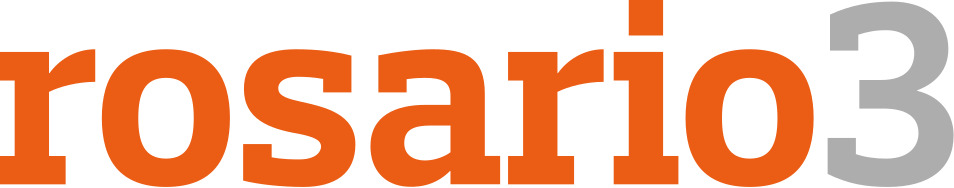
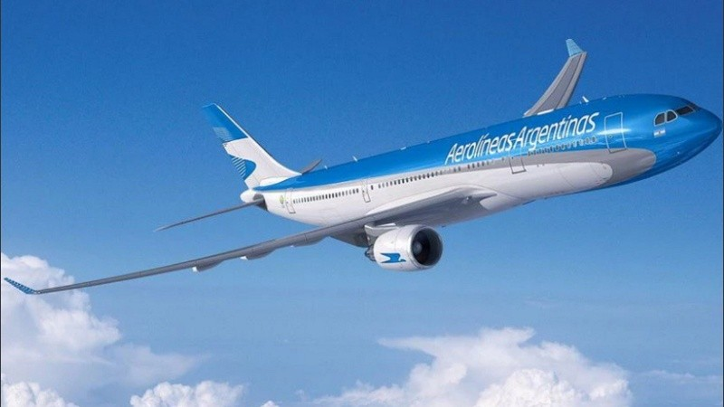

Aerolíneas Argentinas lanza una ruta inédita: a dónde volará y desde cuándo
La aerolínea de bandera anunció que tendrá vuelos en una ruta que nunca antes operó. Los tickets ya se encuentran a la venta.

Con el nuevo intertramo, la aerolínea de bandera pasará a operar 39 rutas que conectarán Buenos Aires con localidades nacionales, 46 rutas federales (que no pasan por Buenos Aires) y 21 destinos internacionales.
Aerolíneas Argentinas lanza una ruta inédita a su operación de cabotaje. La aerolínea de bandera tendrá vuelos entre la Ciudad de Buenos Aires y Reconquista (Santa Fe) por primera vez a partir del 21 de junio, en la previa de las vacaciones de invierno.
Los pasajes ya se encuentran a la venta y se pueden comprar con el programa PreViaje a partir de $ 17.639 por tramo, de acuerdo a la tarifa base publicada en la página web de la aérea. El precio incluye un equipaje para despachar de 15 kilos y una mochila de mano de 8. Viajar en micro sale entre $ 11.000 y $ 14.000 e implica un viaje de 12 horas.
Inicialmente, habrá dos frecuencias semanales los miércoles y sábados con una escala en Rosario (Santa Fe). El servicio saldrá desde el Aeroparque Jorge Newbery a las 11.45 horas rumbo a Rosario, donde arribará a las 12.45, para luego seguir viaje hasta Reconquista, con llegada prevista a las 14.25. El regreso desde Reconquista será a las 15.05 para aterrizar en Aeroparque a las 17.35.
Junto con Avellaneda, Reconquista es la ciudad más importante del norte de la provincia de Santa Fe. Se trata de la tercera ruta doméstica que incorporó la compañía desde el reinicio de los vuelos tras la pandemia: el año pasado, se sumaron Puerto Madryn (Chubut) y Merlo (San Luis) en noviembre.
Con el nuevo intertramo entre Rosario y Reconquista, la aerolínea de bandera pasará a operar 39 rutas que conectarán Buenos Aires con localidades nacionales, 46 rutas federales (que no pasan por Buenos Aires) y 21 destinos internacionales.
Desde marzo, Líneas Aéreas Del Estado (LADE) cuenta con vuelos regulares que unen Buenos Aires con Rosario y Reconquista. De acuerdo a su actual cronograma, los martes se realizan las operaciones: la ida, por la mañana; y el retorno, por la tarde. El resto de las compañías que realizan traslados aéreos a la ciudad santafesina lo hacen bajo vuelos privados.
En el pasado, Avianca llegó a tener vuelos entre Aeroparque y Reconquista, vía Rosario también, entre 2018 y 2019, al igual que Flyest, que los operó hasta ese mismo año. Antes, entre 2013 y 2017, Reconquista recibió vuelos de Macair, que conectaban la ciudad con Buenos Aires y Sunchales, impulsados por la Cámara de Comercio Exterior del Norte Santafesino.
El anuncio fue realizado este viernes. El evento fue encabezado por el ministro de Transporte de la Nación, Diego Giuliano; junto a su par de Interior, Wado de Pedro; el presidente de Aerolíneas Argentinas, Pablo Ceriani; el Intendente de Reconquista, Enrique Vallejos; y la ministra de Gobierno, Justicia y Derechos Humanos de Santa Fe, Cecilia Arena.
"Es una satisfacción agregar una ruta más a nuestra red doméstica de vuelos, porque mejora la conectividad del país, la provincia y las ciudades. Este es solo el comienzo del desarrollo de un mercado que continúa potenciando el tráfico. El crecimiento del país y Aerolíneas Argentinas seguramente redundará en más frecuencias", destacó Ceriani.
"Avanzamos con el Plan de Modernización del Transporte, uniendo puntos de todo el país, no sólo con Buenos Aires, sino también con el interior, de forma transversal", consideró Giuliano, a lo que De Pedro agregó: "El 'Plan de Modernización de Transporte' es el sistema sanguíneo del cuerpo: sin un sistema de transporte, es imposible construir federalismo. A partir de ahora, Reconquista tendrá más posibilidades".